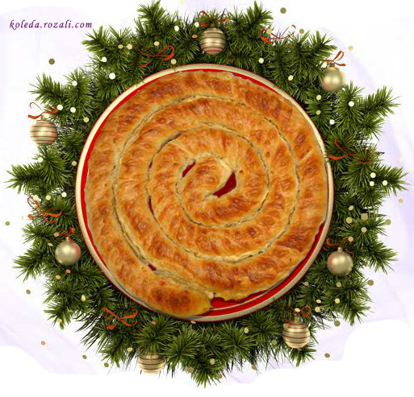

Коледна Баница
Продукти:
- За тестото:
- 2 кг брашно
- 1-2 яйца
- 1 суп. лъж. сол
- 2 суп. лъж. олио
- 3-4 чаени чаши топличка вода за топене на корите – гореща вода
- 1 суп. лъж. сол
- 1-2 суп. лъж. краве масло или свинска мас – разтопени
- За плънката:
- 250 г сирене
- 2 яйца
- за подмазване на баницата – повече от 1/2 чаена чаша мазнина
Начин на приготвяне:
От изброените продукти месим тесто и от него оформяме малки топчета (излизат около 24). Поръсваме ги обилно с брашно и ги оставяме завити в кърпа да “починат”. При точене на всяка кора вземаме шепичка брашно, с която посипваме топчето, разточваме лист, режем го на две и го прегъваме на триъгълник. Печем триъгълниците върху печката от двете страни. В друга тава слагаме гореща вода със сол и разтопената мас (масло). Тавата, в която ще редим баницата намазваме обилно с мазнина. Разбиваме яйцата за плънката и прибавяме към тях натрошеното сирене. Опечените триъгълни кори топим в горещата маслена смес, разтваряме на две и редим в тавата. На два пъти слагаме и от плънката. Когато редим втората част, ръсим и от стопената мазнина. Започваме печенето на баницата. То става върху печка, като средата не се пече, а само краищата, отстрани. От време навреме повдигаме баницата, за да проследим печенето и сипваме с лъжица по малко разтопена мазнина на дъното на тавата. Когато баницата е опечена отдолу, с помощта на друга тава (като я изсипваме върху нея, но за целта тя също трябва да е подмазана), обръщаме от другата страна и продължаваме печенето по същия начин.